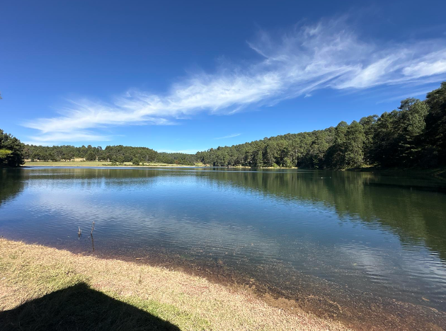
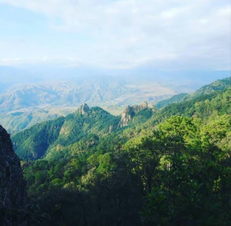

Es una lagunita pequeña, rodeada de puro bosque de pinos, en la zona de Pinal del Marquezado, a unos 1-2hrs del centro de Valle de Bravo.Se llama Negra porque el agua se ve oscura, casi negra-verdosa.
No es porque esté sucia, es por el reflejo de los pinos y del bosque que la rodea, y porque el fondo es de tierra oscura. Cuando hay nubes se ve todavía más oscura.

El Pinal del Marquezado es una comunidad y un área natural protegida que se encuentra entre Valle de Bravo y Otzoloapan, a solo unos veinte minutos del centro de Avándaro subiendo hacia la sierra. Está a dos mil trescientos ochenta y seis metros sobre el nivel del mar, por eso allá arriba hace más frío que abajo en el pueblo de Valle de Bravo, y viven ahí alrededor de trescientos ochenta y ocho habitantes, por lo que es una comunidad pequeña y rural.